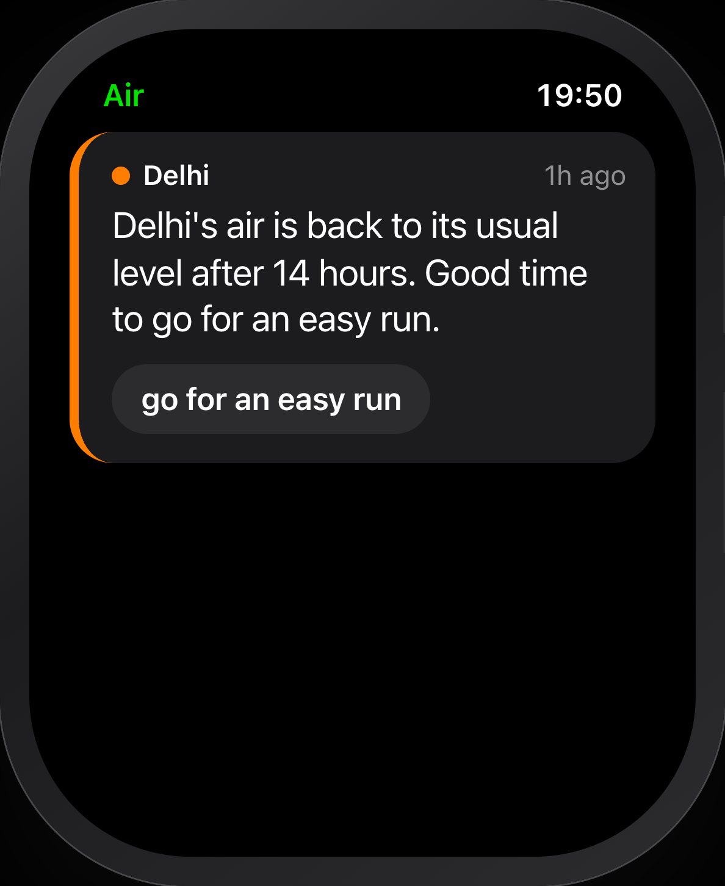
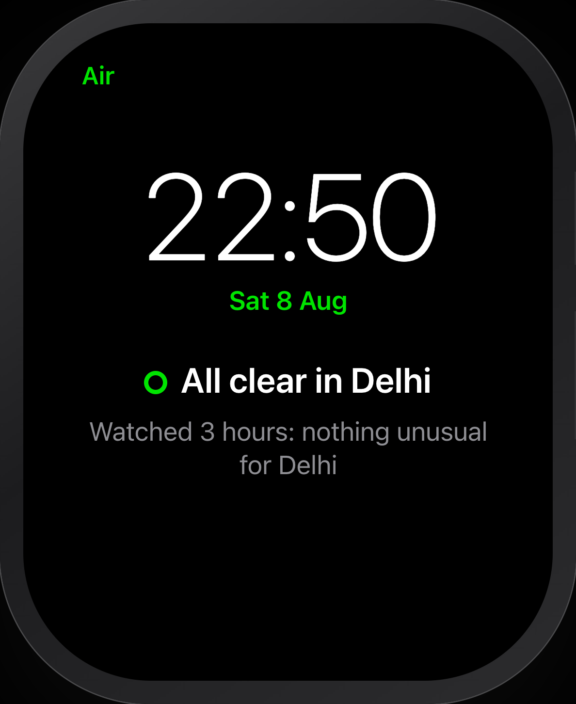
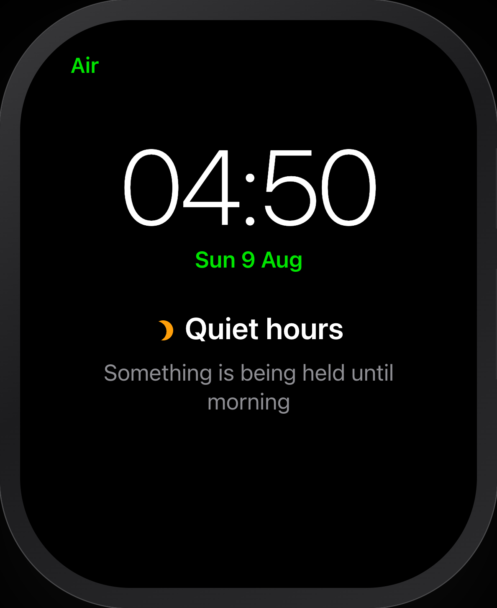
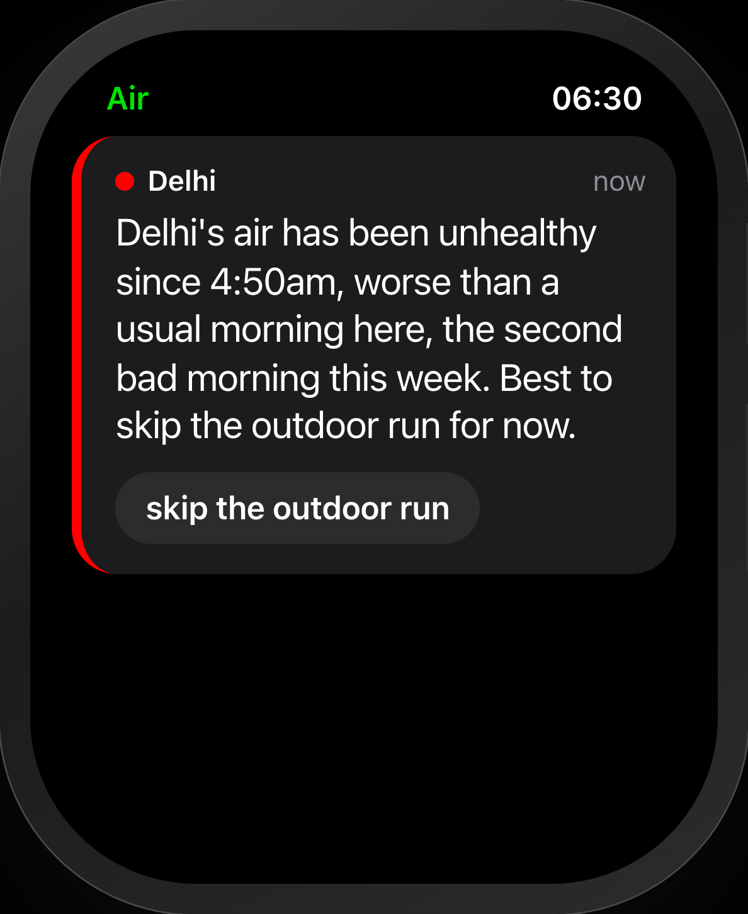
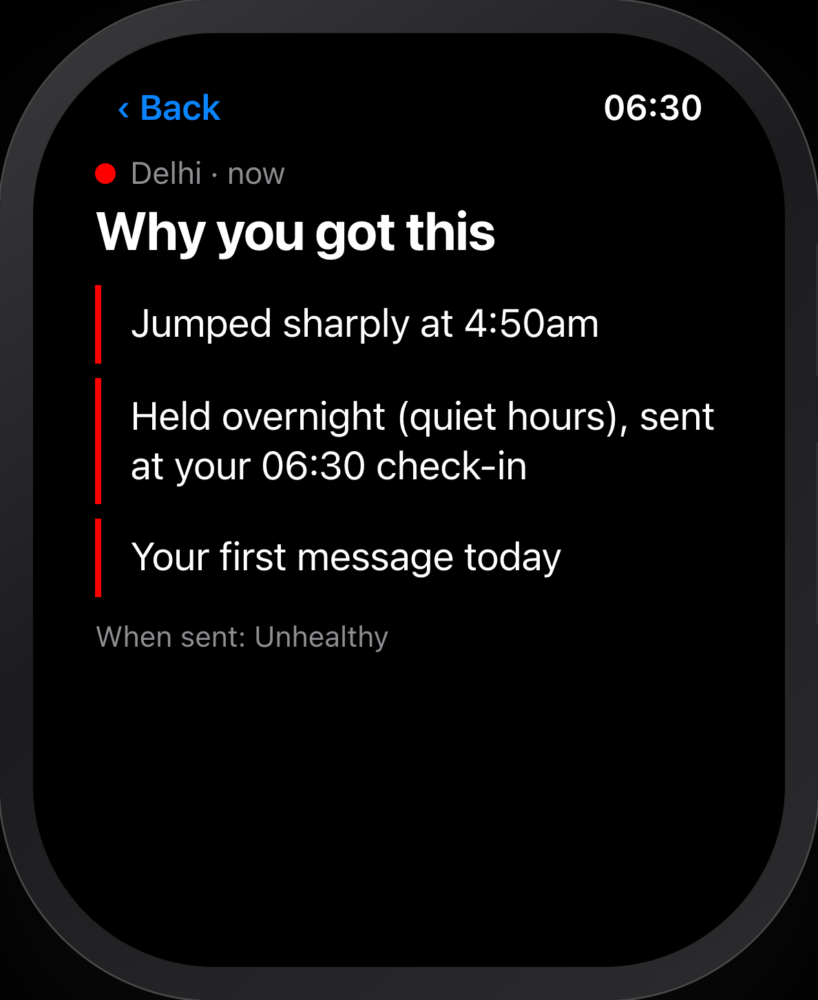

Your air app.
Every.
Single.
Hour.
What if it only spoke when it mattered?

Introducing
Proactive Air Quality Agent
It learns what's normal.
Per city. Per hour.
Typical PM2.5 over 90 days, µg/m³
Unusual isn't enough.
It has to be harmful too.
Harmless
Harmful
Unusual here
Normal here
Stay quiet
odd, but harmless
Tell them
worse than usual, and it matters
Nothing to say
a normal day
Mostly quiet
bad, but usual here
One bad night = one story.
Not twelve alerts.
one story
A real night in Delhi, replayed




90 days · 5 cities · real data
A sensor says
980
.
Glitch · ignored
alerts a week, per person, from a 90-day replay
53%
of first-draft "trends" were flat or falling.
flat, called a trend
rising: a real climb
So now a climb has to rise.
Every hour, logged.
Every silence, explained.
18 layers.
Air today. Pollen, heart rate, SOS next.
real
stub, one rule
not yet
Speaks rarely.
Explains itself.
Proactive Air Quality Agent
github.com/yb0203/air-quality-insight-agent